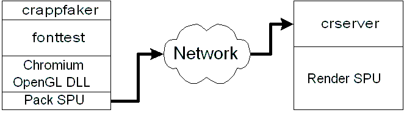

Your first Chromium run will be something quite simple. One of the
programs built during the compile of the Chromium system is called "fonttest" -
you can go ahead and run it now. If everything is OK, you should see a
window appear with a text message in it. This window is using the system's
OpenGL - nothing Chromium-related has happened yet. To run this program
using Chromium, you will need to follow these four steps (you'll need three
shell windows open):
cr/bin/ARCH/.
On Linux, for example, it'll be cr/bin/Linux/.
If you're using Unix you should edit your .cshrc or
.bash or similar shell start-up file and add
cr/bin/ARCH/ to the search path. cr/mothership/configs/crdemo.conf. cr/mothership/configs directory, and type:python crdemo.conf fonttestcrservercrappfakerOnce application starts you should see two windows appear: the Render SPU
window and the application window.
The application window belongs to the fonttest
program started by the application faker. As far as
fonttest knows, it is rendering to that window.
The Chromium OpenGL DLL intercepts all of fonttest's calls to OpenGL and sends
them over the network (in this case, a TCP/IP connection to your local machine)
to the Chromium server, where they are dispatched to the system.
The Chromium run you have just done corresponds to the following graph of nodes:

The Chromium distribution includes many sample configurations to demonstrate the capabilities of Chromium. Here's a summary. The scripts are found in mothership/configs/.
crdemo.conf - this is the configuration described above. One application node is connected (via a pack or tilesort SPU) to one crserver node which has a render SPU.
local.conf - this configuration demonstrates OpenGL command filtering. A single application node has a hiddenline SPU and a render SPU. The hiddenline SPU manipulates the OpenGL command stream to render the demo program's geometry in an outline mode.
blur.conf - another example of OpenGL command filtering. This one demontrates the motion blur SPU.
simplemural.conf - this configuration demonstrates a two-tile tilesort configuration. The application node has a tilesort SPU which sends commands to two crserver nodes, each with a render SPU.
reassemble.conf - this configuration demonstrates the tilesort SPU and the render SPU's ability to render back into the application's window (on X only; not Windows). The application node uses a tilesort SPU to talk to two crservers. Each crserver has a readback SPU. The readback SPUs render into the original application window, rather than separate windows.
This configuration also demonstrates dynamic retiling. When the application window is resized, the tilesort SPU's tiling is changed.
psubmit_last.conf - a demonstration of sort-last parallel rendering. Two application nodes, each with a read back SPU, render part of the scene. The partial renderings are sent by pack SPUs to the final crserver node's render SPU where the images are Z-composited together. The demo can be modified to use more than two application instances.
psubmit_first.conf - demonstration of combining tilesort (sort-first) with sort-last rendering. The two application nodes each render half the scene and use the tilesort SPU to send rendering commands to two crserver nodes.
psubmit_bswap.conf - demonstration of sort-last rendering with the binary swap SPU.
multitilesort.conf - demonstration of a two-level tilesort configuration.
stereo[1234].conf - demontrations of various stereo rendering solutions. See the comments in each file for details.
cavetest[12].conf - demonstrations of non-planar tilesorting. See the comments in each file for details.
crut_*.conf - demonstrations of CRUT
threadtest.conf - demonstration of several multi-threaded rendering methods. See the file's comments for details.
dmx.conf - a simple demonstration of DMX support.
There are lots of other samples to look at in the same directory.